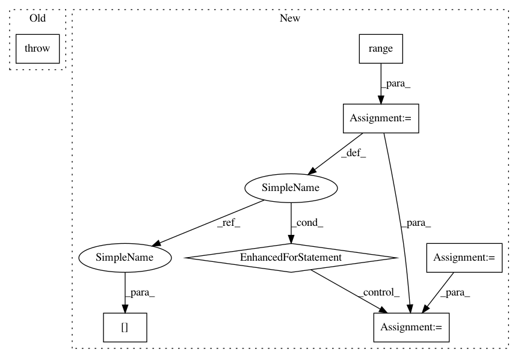

6967cc5df1801b8f5a01110417b38495896d75e0,src/spn/structure/leaves/cltree/Inference.py,,cltree_likelihood,#Any#Any#Any#,9
Before Change
from spn.algorithms.Inference import add_node_likelihood
def cltree_likelihood(node, data=None, dtype=np.float64):
raise ValueError("Not Implemented")
def add_cltree_inference_support():
add_node_likelihood(CLTree, cltree_likelihood)
After Change
import numpy as np
def cltree_likelihood(node, data=None, dtype=np.float64):
probs = np.zeros(data.shape[0], dtype=dtype)
for feature in range(0, node.n_features):
parent = node.tree[feature]
if parent == -1:
probs = probs + node.log_factors[feature, data[:,node.scope[feature]],0]
else:
probs = probs + node.log_factors[feature, data[:,node.scope[feature]], data[:,node.scope[parent]]]
return np.exp(probs.reshape(data.shape[0],1))
In pattern: SUPERPATTERN
Frequency: 5
Non-data size: 7
Instances
Project Name: SPFlow/SPFlow
Commit Name: 6967cc5df1801b8f5a01110417b38495896d75e0
Time: 2018-10-23
Author: nicola.dimauro@uniba.it
File Name: src/spn/structure/leaves/cltree/Inference.py
Class Name:
Method Name: cltree_likelihood
Project Name: SPFlow/SPFlow
Commit Name: 6967cc5df1801b8f5a01110417b38495896d75e0
Time: 2018-10-23
Author: nicola.dimauro@uniba.it
File Name: src/spn/structure/leaves/cltree/Inference.py
Class Name:
Method Name: cltree_likelihood
Project Name: scikit-image/scikit-image
Commit Name: a346268a461ef2a403ed8e8da6e9e446c741e75b
Time: 2017-10-25
Author: jni.soma@gmail.com
File Name: skimage/measure/_moments.py
Class Name:
Method Name: moments_normalized
Project Name: Bihaqo/t3f
Commit Name: c4d25dad258c593270c5e405f8a5182d536f8d88
Time: 2017-01-25
Author: novikov@bayesgroup.ru
File Name: tensor_train.py
Class Name: TensorTrain
Method Name: get_shape
Project Name: google-research/language
Commit Name: b4562327a4554689d8ab0906c605476ccf817336
Time: 2019-11-15
Author: kentonl@google.com
File Name: language/xsp/data_preprocessing/abstract_sql.py
Class Name:
Method Name: _get_from_clause_for_tables
Project Name: SheffieldML/GPy
Commit Name: 65f9c7bb768529e15bdce9ee41b92aad997f1346
Time: 2013-03-06
Author: james.hensman@gmail.com
File Name: GPy/kern/coregionalise.py
Class Name: coregionalise
Method Name: dKdiag_dtheta